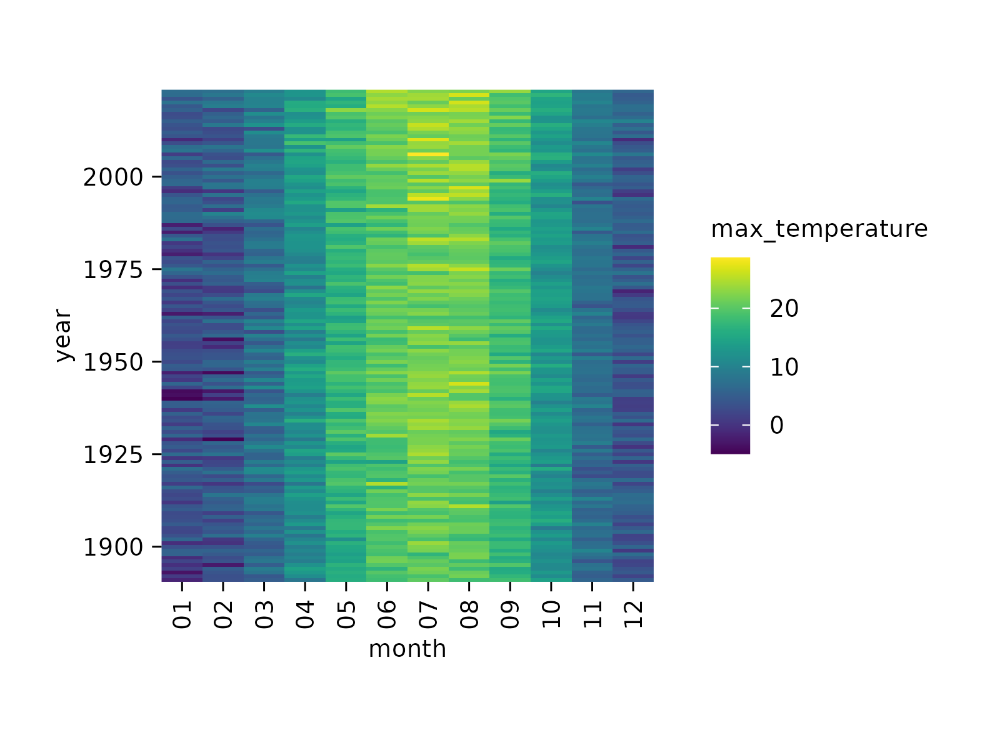
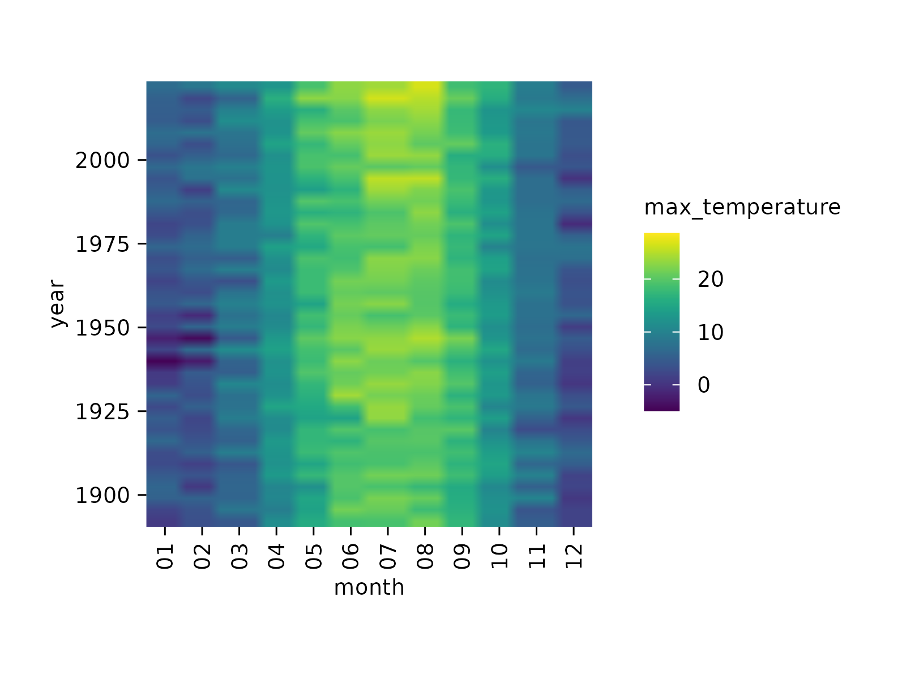
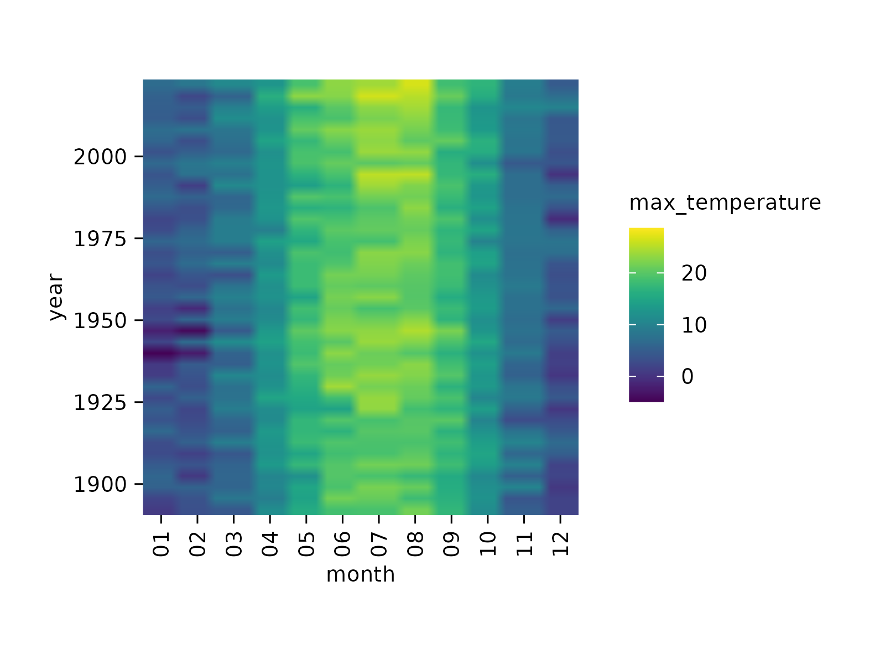

Add heatmap
Usage
add_heatmap(
plot,
scale = c("none", "row", "column"),
rotate_labels = 90,
rasterize = FALSE,
rasterize_dpi = 300,
...
)Arguments
- plot
A
tidyplotgenerated with the functiontidyplot().- scale
Whether to compute row z scores for
"row"or"column". Defaults to"none".- rotate_labels
Degree to rotate the x axis labels. Defaults to
90.- rasterize
If
FALSE(the default) the layer will be constructed of vector shapes. IfTRUEthe layer will be rasterized to a pixel image. This can be useful when plotting many individual objects (1,000 or more) compromises the performance of the generated PDF file.- rasterize_dpi
The resolution in dots per inch (dpi) used for rastering the layer if
rasterizeisTRUE. The default is300dpi.- ...
Arguments passed on to the
geomfunction.
Details
add_heatmap()supports rasterization. See examples and Advanced plotting.
Examples
climate %>%
tidyplot(x = month, y = year, color = max_temperature) %>%
add_heatmap()

# Calculate row-wise z score
climate %>%
tidyplot(x = month, y = year, color = max_temperature) %>%
add_heatmap(scale = "row")
 # Calculate column-wise z score
climate %>%
tidyplot(x = month, y = year, color = max_temperature) %>%
add_heatmap(scale = "column")
# Rasterize heatmap
climate %>%
tidyplot(x = month, y = year, color = max_temperature) %>%
add_heatmap(rasterize = TRUE, rasterize_dpi = 20)

# Calculate column-wise z score
climate %>%
tidyplot(x = month, y = year, color = max_temperature) %>%
add_heatmap(scale = "column")
# Rasterize heatmap
climate %>%
tidyplot(x = month, y = year, color = max_temperature) %>%
add_heatmap(rasterize = TRUE, rasterize_dpi = 20)
